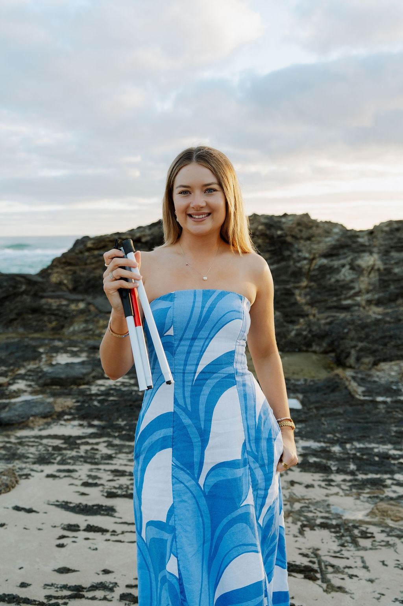
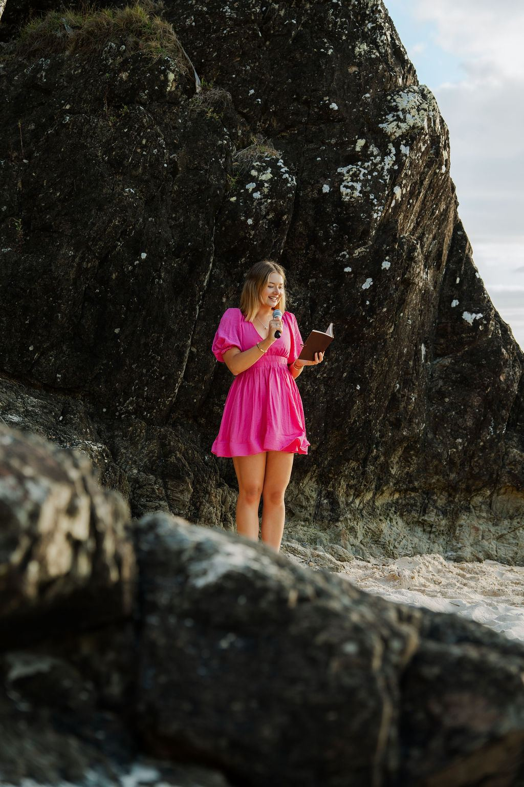

What I do · 04
Disability advocacy
Growing up, I hid my disability. Now I talk about it openly, to change how people see disability and to help everyone feel safe, seen and included.

Why it matters
From hiding it to owning it
For years I was embarrassed of my disability and never spoke about it. If my condition was ever made obvious I would break down, because I couldn’t stand being ‘different’.
Now I share it openly, on stage, online and in my community, because I know how isolating it can feel. Much of my condition is invisible, and I want people to understand what living with low vision is really like, so schools, workplaces and communities can be more inclusive.
I’ve worked with organisations including Vision Australia, Seeing Eye Dogs and Blind Golf Australia, and I’m always open to new ways to make a difference.

What I stand for
-
Inclusion and belonging
Everyone deserves to feel safe, seen and included, wherever they are.
-
Invisible disability
Helping people understand that not every disability can be seen.
-
Representation
Showing life with disability honestly and positively, online and in the media.
-
Possibility
Challenging what people think someone with a disability can and can’t do.
Listen
More of what I do
- 01 Motivational speaking Talks on confidence, resilience and mindset, built on my own journey with low vision.
- 02 MC & event hosting Energy and warmth on the mic, keeping your event flowing from the first welcome to the final word.
- 03 Content creation Honest, everyday stories for my community and the brands that want to reach them.
Let’s make a difference
Get in touch to talk about how we can work together.